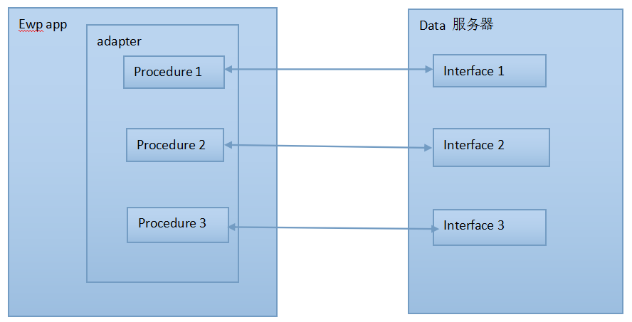

adapter为EWP App提供了连接数据后台、获取数据和数据格式转换的功能，支持http、tcp、Erlang RPC协议，也可以由App根据实际情况扩展协议。Adapter为App开发提供了很大的便捷性。 一个Adapter由若干个Procedure组成。Procedure定义了从服务器获取指定数据的交互过程，并提供了适配方法供EWP App开发人员调用。适配方法会完成输入检查、连接后台、获取数据、数据转换等一些列处理流程，并将结果返回给调用者。

Adapter 担任了EWP App和数据服务器后台的中间枢纽的角色。它为App提供了连接数据后台，获取数据，数据格式转换的功能。Adapter封装了几种通讯协议，使得调用者可以很方便的和数据后台取得交互，而不用去关心其底层是如何实现的，大大减少了app开发人员的工作量。
一个Adapter由若干个Procedure组成，Procedure定义了从服务器获取指定数据的交互过程，并提供适配方法供app开发人员调用。适配方法会完成输入检查，连接后台，获取数据，数据格式转换等一系列处理流程，并将结果返回给调用者。
{adapter, [
{name, "simulator"},
{host, "localhost"},
{protocol, http},
{port, 4003},
{res_convertor, xml2term}
}.
name: 适配器唯一名称
host: 请求接口ip地址。具体使用略有差异，请参考下一章节各个协议处的讲解。
protocol: 请求协议，rpc,socket,extend,http 在这四个值之外的默认为http请求
port: 请求接口端口，在socket和http协议中需要用到
res_convertor: 该参数是对ewp5.3修改之后的最新代码的讲解。对接口返回的数据格式进行转换，目前仅支持xml2term和 xml2json，可进行自定义扩展。自定义扩展例子讲解见自定义扩展协议的相关章节。
在调用invoke_procedure的时候加该配置参数是不生效的。当adapter和procedure中都有该配置项时，procedure的优先级更高。在adapter 和procedure 里都没有配置的时候返回原文。
{procedure, [{id, "mb01"},
{adapter, "simulator"},
{res_convertor, xml2term},
{path, "ebank"},
{gen_log, true},
{parameters, [{"tranCode", true}, {"userId", true}]}]
}.
id: procedure配置唯一标志位，不能重复，一般与接口tranCode一样。
adapter: 此接口请求使用适配器，此值必须是在adapter 配置name中存在的值。
res_convertor: 该参数是对ewp5.3修改之后的最新代码的讲解。对接口返回的数据格式进行转换，目前仅支持xml2term和 xml2json，可进行自定义扩展。当adapter和procedure中都有该配置项时，procedure的优先级更高。
path: Url路径，用在HTTP Adapter中。调用该Procedure发送请求的url为Host:Port/Path . http请求中使用拼接url值,如果请求为 http://localhost:4003/ebank?tranCode=mb01&userId=0001 那么此时path写为ebank。 如果为http://localhost:4003/MB01.do?tranCode=mb01&userId=0001那么此时path写为MB01.do。
gen_log: 当配置为true时，会在ewp/log/下生成adapter文件夹，在此文件夹下生成以procedure id命名的文件，写入内容为请求和返回。
data_sample: 当在ewp.conf中配置了adapter_use_sample_data为true，此时返回读取此路径下的静态文件。
parameters: 此接口请求参数配置。
格式：tuple list [{key,true} == 会检验参数必传/{key,false} == 不检验参数必传/{key,value} == 参数默认值]
修改.app的controllers配置，注册如下Web接口。我们将数据获取接口注册为demo/adapter，并将其映射到demo_controller:adapter/1函数处理。
{{"demo", "adapter"}, {demo, adapter}, [{decrypt, false}, {verify, false}]},
附：这里的{"demo", "adapter"}，这部分是拼接在请求host:port/demo/adapter?user_id=1中的, {demo, adapter}这部分表示映射到demo_controller:adapter/1。
在App目录下创建demo_controller.erl模块，添加如下代码。adapter/1会根据user_id请求参数生成不同的用户信息，这些信息以XML报文返回。
-module(demo_controller).
-export([adapter/1]).
-include("ewp.hrl").
adapter(Arg) ->
ewp_params:save_yaws_arg(Arg),
UserInfo =
case ?param("user_id") of
"1" ->
"0000 "++
"Zhang San Beijing ";
"2" ->
"0000 "++
"Li Si Shanghai ";
_->
"0001 Invalid User "
end,
ewp_render_util:render_xml("" ++ UserInfo ++" ").
编译App并启动，在浏览器中访问host:port/demo/adapter?user_id=1，可以看到类似于下图的效果。
0000 Zhang San Beijing
修改App目录下的config/adapter.conf文件，添加如下配置：
{adapter,[
{name, "http_demo"},
{protocol, http},
{host, "localhost"},
{port, 4003}
]}.
{procedure,[
{id, "demo_procedure"},
{adapter, "http_demo"},
{path, "demo/adapter"},
{parameters, [{"user_id", true}]},
{res_convertor, xml2term} ]}.
这样我们便添加了一个使用HTTP协议的Adapter和一个Procedure，在调用这个Procedure时需要指定user_id参数并会根据这个参数访问localhost:4003/demo/adapter。 重启App服务，在Erlang shell中输入如下命令：
Res = ewp_adapter:invoke_procedure("http_demo", "demo_procedure", [{"user_id", "1"}], [{http_options, [{connect_timeout, 500}]}, {options, [{sync, true}]}]).
ewp_adapter:invoke_procedure/4的第一个参数为Adapter的name，第二个参数为Procedure的id，第三个参数为调用Procedure输入的参数，第四个参数是由http_options 和 options组成的一个list,内容是一些请求选项。 这里的选项可以是请求时的HTTPOptions和Options。具体可参考： http://www.erlang.org/doc/man/httpc.html#request-4 。
我们将Procedure调用结果赋值给了Res变量，查看Res的值会看到如下效果：
(ebank@tracvm)2> Res.
[{root,[{errCode,"0000"},
{name,"Zhang San"},
{'From',"Beijing"}]}]
可以看到调用Procedure的结果自动转换成了Erlang的数据类型，这是因为我们在配置procedure时指定了{res_convertor, xml2term}选项。
Rpc是erlang自带的协议，具体可参考： http://www.erlang.org/documentation/doc-5.3/lib/kernel-2.9/doc/html/rpc.html
如果要使用RPC（Remote Procedure Call Protocol）类型的请求，则需按照以下的流程进行相应的设置。
在app目录下建立请求的入口模块和入口方法，添加如下代码：
-module(ebank_test).
-export([rpc_test/2]).
-include("ewp.hrl").
rpc_test(Params, Options) ->
lists:append(Params, Options).
rpc_test/2 ：Params是procedure里的parameters配置，Options是发请求时的可选参数。 接口返回数据是这两部分参数组成的list====[{"tranCode","MB10045"}, {option,"an option"}].
在项目中的config/adapter.conf文件里对适配器进行设置。
{adapter, [{name, "rpc_adapter"},
{host, "tracvm"},
{protocol, {rpc, {ebank, ebank_test, rpc_test}}}
]}.
host: 节点名称的域名部分的取值。 具体有关节点请参考： http://www.erlang.org/doc/reference_manual/distributed.html
{procedure, [{id, "a_procedure"},
{adapter, "rpc_adapter"},
{gen_log, true},
{parameters, [{"tranCode", "MB10045"}]}]
}.
(ebank@tracvm)3> Res=ewp_adapter:invoke_procedure("rpc_adapter","a_procedure",[],[{option,"an option"}]).
(ebank@tracvm)4> Res.
[{"tranCode","MB10045"},{option,"an option"}]
Socket只实现了tcp连接。
在app目录下添加如下代码：
-module(socket_adapter).
-export([socket_start/0,socket_stop/0]).
-include("ewp.hrl").
start(Port) ->
{ok, Listen} = gen_tcp:listen(Port, [binary, {packet, 2}]),
spawn(fun() -> start_loop(Listen) end),
receive
stop ->
gen_tcp:close(Listen)
end.
start_loop(Listen) ->
case gen_tcp:accept(Listen) of
{ok, Socket} ->
spawn(fun() -> start_loop(Listen) end),
loop(Socket);
_ ->
over
end.
loop(Socket) ->
receive
{tcp, Socket, Req} ->
?ewp_log("request is ~p~n",[Req]),
gen_tcp:send(Socket, Req),
loop(Socket);
{tcp_closed, Socket} ->
%?ewp_log("socket closed by client!~n",[]),
over
end.
socket_proc(Port) ->
AdapterName = "socket_adapter",
ProcedureId = "a_procedure",
Pid = spawn(fun() -> start(Port) end),
register(stop_flag , Pid), %%注册一个进程别名stop_flag
ewp_global:put_conf(ewp, res_convertor, xml2term).
socket_stop() ->
stop_flag ! stop.
socket_start() ->
Port = 5000,
socket_proc(Port).
socket_test([{Key, Value}]) ->
"<" ++ Key ++ ">" ++ Value ++ " ".
socket_test/1的参数[{Key, Value}]是procedure的配置项parameters的取值，返回的是组装后的xml格式的数据。
在项目中的config/adapter.conf文件里对适配器进行设置。
{adapter, [{name, "socket_adapter"},
{host, "localhost"},
{port, 5000},
{protocol, {socket, {socket_adapter, socket_test}}}
]}.
{procedure, [{id, "a_procedure"},
{adapter, "socket_adapter"},
{gen_log, true},
{res_convertor, xml2term},
{parameters, [{"tranCode", "MB10045"}]}]
}.
Socket server启动
socket_adapter:socket_start().
请求数据
Res = ewp_adapter:invoke_procedure("socket_adapter", "a_procedure", [], [{packet, 2}, {active, true}, {connect_timeout, 2000}, {recv_timeout, 2000}]).
这是一个请求的示例，第一个参数给的是Adapter名称，第二个参数给的是使用的procedure名称，第三个参数是在建立socket连接和发送socket请求时用到的一些参数。
connect_timeout： 连接建立的超时时间，以milliseconds为单位，默认设置是不超时。
recv_timeout： 设定接收socket包的超时时间，以milliseconds为单位，默认设置是不超时。
其他选项： 在gen_tcp:connect 中识别的参数都可以包含在option中，相关参数详细讲解请参考： http://www.erlang.org/doc/man/gen_tcp.html 。
查看返回数据：
(ebank@tracvm)34> Res.
[{root,[{tranCode,"MB10045"}]}]
Socketserver 关闭：
(ebank@tracvm)36>socket_adapter:socket_stop(). stop
在入口方法extend_test/extend_func 添加如下代码：
-module(extend_test).
-export([extend_func/5, test_extended_to_term/1]).
-include("ewp.hrl").
extend_func(_Adapter, _Procedure, _Params, _Options, _Extra) ->
"result_is_list:value".
test_extended_to_term( Res) ->
[_, Value] = string:tokens(Res, ":"),
{result_is_atom, list_to_atom(Value)}.
这里的入口方法extend_func/5 有五个参数，_Adapter是adapter配置，_Procedure是procedure配置，_Params是配置在procedure里的parameters的值，_Options是在调用invoke_procedure时传的第四个参数，即可选项， _Extra是调用invoke_procedure时传的第五个参数，即附加选项。该接口返回的是一个常量字符串 "result_is_list:value"。
test_extended_to_term/1 该方法是配置在procedure 里的res_convertor的扩展方法，可以根据需求做合理扩展。该例是把返回值做了字符串分割后再返回。
在config/adapter.conf 里配置适配器：
{adapter, [{name, "extended_adapter"},
{host, "localhost"},
{port, 4003},
{protocol, {extend, {extend_test, extend_func}}}
]
}.
{procedure, [{id, "a_procedure"},
{adapter, "extended_adapter"},
{gen_log, true},
{res_convertor,
{extend_test, test_extended_to_term}},
{parameters, [{"tranCode", "MB10045"}]}]
}.
Res = ewp_adapter:invoke_procedure("extended_adapter", "a_procedure", [],
[ {option, some_option}],
[{extra, "hello world"}]).
(ebank@tracvm)4> Res.
{result_is_atom,value}
一个adapter对应若干procedure，为便于管理，我们建议在procedure特别多的时候，各个adapter及其它所对应的procedure放在一个文件里。这样出现多个配置文件，比如adapter1.conf, adapter2.conf... , 他们都放在同一个文件目录下 config/adapter_conf里面，修改完配置后，使用 ewp_adapter:load_conf("config/adapter_conf")对该目录下所有配置文件进行重新加载即可生效，不需要重启。这些配置文件中有相同的配置项，且配置内容相同时，为方便维护，可使用如下介绍的最佳实践方案。
adapter_header.hconf
{'DEFINE',
[
{whether_log, true}
]
}.
adapter1.conf
{'INCLUDE', "adapter_header.hconf"}.
{adapter,[
{name, "http_demo"},
{protocol, http},
{host, "localhost"},
{port, 4003}
]}.
{procedure,[
{id, "demo_procedure"},
{adapter, "http_demo"},
{path, "demo/adapter"},
{gen_log, {'USE', whether_log}},
{parameters, [{"user_id", true}]},
{res_convertor, xml2term}
]}.
adapter2.conf
{'INCLUDE', "adapter_header.hconf"}.
{adapter, [{name, "rpc_adapter"},
{host, "tracvm"},
{protocol, {rpc, {ebank, ebank_test, rpc_test}}}
]
}.
{procedure, [{id, "a_procedure"},
{adapter, "rpc_adapter"},
{gen_log, {'USE', whether_log}},
{parameters, [{"tranCode", "MB10045"}]}]
}.